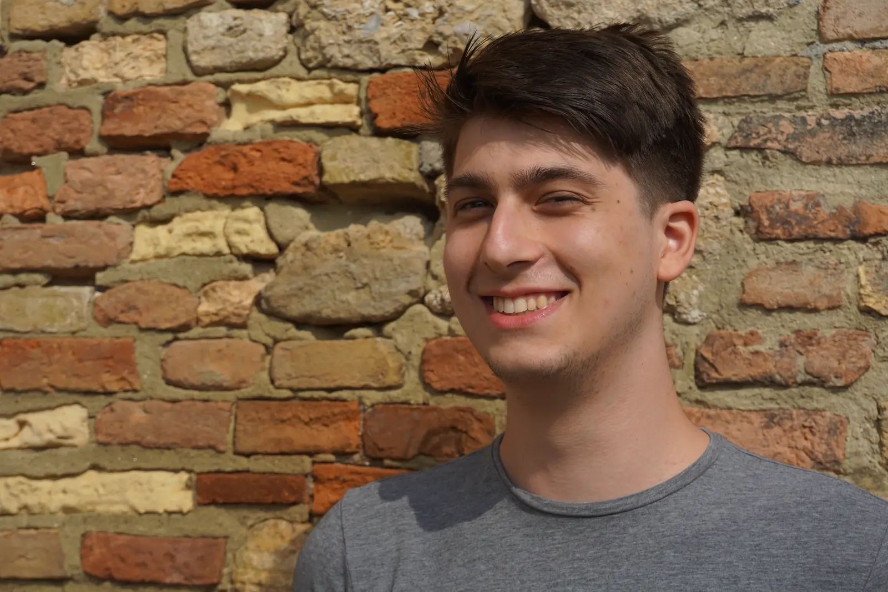
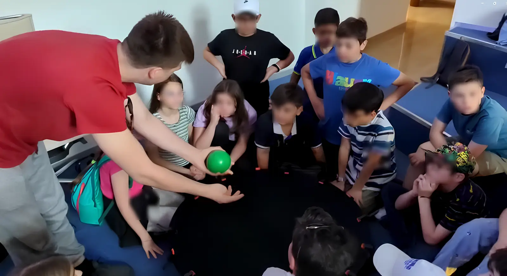

High-Energy Astrophysics
I worked with sGRBs and lGRBS to understand their origins and the signals they produce especially in future detectors. Developping pipelines not only for background estimation but also forecasts.
My research focuses on high-energy astrophysics, especially the multi-messenger approach to transients such as binary neutron-star mergers and supernovae. I make forecasts for next-generation detectors by studying how space- and ground-based observatories can work together.
This usually involves Monte Carlo simulations, Bayesian inference, detector forecasts and an unreasonable amount of bugs data.

I worked with sGRBs and lGRBS to understand their origins and the signals they produce especially in future detectors. Developping pipelines not only for background estimation but also forecasts.
I study binary neutron-star mergers and core-collapse supernovae by combining gravitational-wave, electromagnetic and neutrino information.
I make forecasts for Einstein Telescope, Cosmic Explorer, THESEUS and other future detectors, focusing on what we can learn when ground- and space-based observatories see the same event.
Software & tools
I feel science should be reproducible and accessible. Here you can find the software tools I have used in my research, with some of them actually working in the browser.
Multimessenger Astronomy for GRBs and Gravitational Waves in Python
A public Monte Carlo and MCMC package for simulating short-GRB populations, fitting them to the Fermi/GBM catalogue and forecasting joint gravitational-wave and electromagnetic detections.
Background estimation for long Fermi/GBM transients using neighbouring spacecraft orbits. I migrated the original Python 2 code, added a modern GUI and used it in analyses of the BOAT and ultra-long MeV transients.
Ballistic ray-tracing simulations for athermal phonons in cryogenic detectors, developed with experimental physicists to investigate unexpected sensor behaviour.
An international Fisher-matrix framework for gravitational-wave detector forecasts. My contributions added high-frequency corrections and support for arbitrary frequency- and time-series injections, including supernova waveforms.
This pipeline uses public GWOSC strain data to estimate the detectability range of a compact-binary signal associated with an external gamma-ray trigger. I contributed the neutron star-black hole cuts.
W.I.P. browser port of OSV
A small working part of the desktop orbital-subtraction code. It calculates the source and ± orbit background intervals locally in your browser.
Selected publications
2026 · First & corresponding author
Astronomy & Astrophysics, 710, A388
2026 · Preprint
Fermi observations of the emergence and rapid decay of a gamma-ray-burst afterglow.
2026 · Preprint
Connecting detector design choices to the science reach of a third-generation gravitational-wave observatory.
2026 · Preprint
Cryogenic detector development informed by ballistic phonon simulations.
2025 · Refereed article
Astronomy & Astrophysics, 703, L2
2025 · Preprint
A proposed way to measure the remnant disk through the ringdown signal.
Academic CV
Experience & education
2022-present
PhD in Astroparticle Physics with Marica Branchesi, Samuele Ronchini and Filippo Santoliquido.
October 2025
Supernova-neutrino analysis and gravitational-wave template development with the Particle Astrophysics Group.
April-September 2024
Cryogenic-detector simulations developed alongside experimental work in Munich.
2022 / 2020
MSc in Particle and Astroparticle Physics, cum laude; BSc in Physics.

I supervise a master’s student working on supernova-neutrino detection with dark-matter detectors, and I mentor new international students through the GSSI Buddies programme.
I have also been a tutor for Space Explorers, a speaker and organiser for Scienzia in Bidda, and a guide at the GSSI Visitors Centre.
Recent speaking includes an invited seminar at the Niels Bohr Institute and contributions at COSPAR, THESEUS and European Astronomical Society meetings.
Contact
I’m based at GSSI in L’Aquila, Italy. Email is the easiest way to reach me.
alessio.desantis@gssi.it